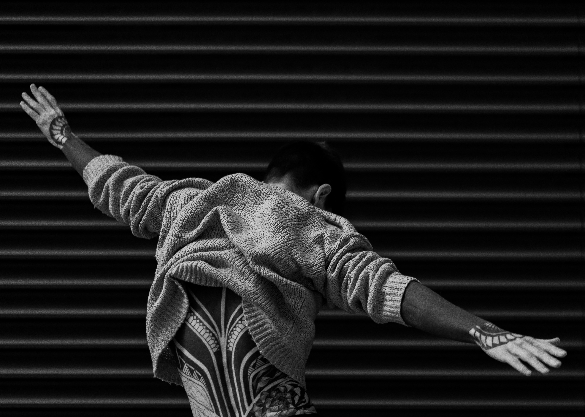

SubStyle è più di un sito: è un viaggio visivo e culturale nell’evoluzione dello streetwear e delle subculture urbane. Dalle strade degli anni ’70 alle passerelle contemporanee, esploriamo come lo stile nasca dal basso, si contamini, si trasformi in linguaggio identitario. Scopri timeline, icone, trend e case studies che raccontano l’energia cruda e autentica della moda di strada. Qui ogni dettaglio parla di ribellione, appartenenza, visione.
Style speaks
Sub-style reveals.

DI COSA PARLIAMO?
TREND
Qui esploriamo le tendenze che definiscono lo stile urbano contemporaneo.
TIMELINE
Una mappa visiva e testuale dell’evoluzione dello streetwear e delle subculture urbane.
STYLE ICONS
Da icone globali a outsider di culto: qui analizziamo chi ha fatto la differenza.
CASE STUDIES
Approfondimenti su brand, progetti e momenti chiave che hanno trasformato il panorama della moda urbana.
TREND
Qui esploriamo le tendenze che definiscono lo stile urbano contemporaneo. Dal ritorno delle estetiche Y2K alle visioni techwear, ogni trend è il risultato di contaminazioni culturali, sociali e digitali.
Non si tratta solo di moda: sono codici visivi che raccontano identità in movimento.
1970s
Gli anni Settanta sono un terreno fertile per la nascita delle prime vere subculture urbane. È un decennio in cui la moda diventa dichiarazione politica.
1980s
Gli anni Ottanta sono un’esplosione visiva. È l’epoca delle spalline, delle tinte fluo, delle scarpe da ginnastica portate ovunque.
1990s
I Novanta sono il decennio della stratificazione: estetica skater, cultura rave, hip hop dorato, grunge e fashion minimale convivono.
2000s
I Duemila inaugurano l’era postmoderna dello stile urbano. Le estetiche si contaminano in modo eccessivo, stratificato, quasi surreale.
Questa sezione è un omaggio a loro: alle Style Icons che hanno fatto della propria immagine un manifesto. Figure che hanno ispirato intere generazioni, non solo con ciò che indossavano, ma con ciò che rappresentavano: ribellione, identità, stile, linguaggio.

SUPREME X LV
Nel 2017, l’impossibile si è realizzato. Supreme, re dello skatewear newyorkese, ha unito le forze con la maison francese per eccellenza: Louis Vuitton.
ADIDAS X RUN DMC
Una sneaker, una canzone, un movimento.I Run DMC, pionieri dell’hip hop old school, portano le Superstar Adidas senza lacci sul palco e le trasformano in simbolo.
THE AF1 STORY+COLLAB
La Nike Air Force 1 non è solo una scarpa: è una tela bianca, un manifesto urbano. Nata nel 1982 come scarpa da basket, è diventata un'icona nel Bronx, simbolo di appartenenza, status, e stile.
JORDAN X DIOR
Quando la sneaker più mitica del basket incontra l’eleganza sartoriale parigina. La Air Jordan 1 High OG Dior è la fusione estrema tra sport e alta moda.
PALACE X RALPH LAUREN
La collab tra Palace, brand londinese nato dallo skate, e Ralph Lauren, simbolo del prep e del country club, è stata una svolta inaspettata.